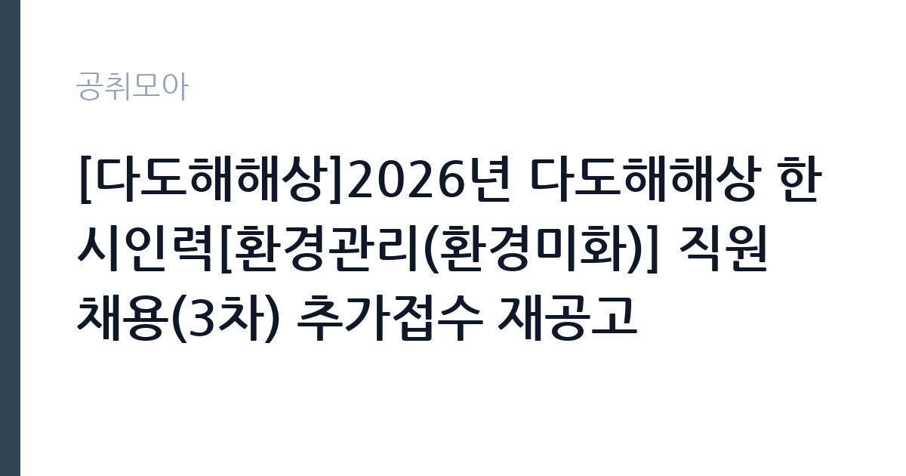

[공공기관] [다도해해상]2026년 다도해해상 한시인력[환경관리(환경미화)] 직원 채용(3차) 추가접수 재공고
국립공원공단 다도해해상국립공원사무소 · 전남 · 마감 2026-09-28 (D-6) · 출처 나라일터

한눈에 보는 모집 조건
| 기관 | 국립공원공단 다도해해상국립공원사무소 |
|---|---|
| 공고명 | [다도해해상]2026년 다도해해상 한시인력[환경관리(환경미화)] 직원 채용(3차) 추가접수 재공고 |
| 고용형태 | 일용직 |
| 근무지 | 전남 |
| 게시일 | 2026-09-22 |
| 마감일 | 2026-09-28 (D-6) |
지원자격, 이렇게 읽으세요
- 한시인력(환경관리_환경미화) 1명
- 접수 ~2026-09-28 마감
- 세부 조건은 원문 공고문 확인
채용개요상 별도의 자격 제한이 안내되지 않아 폭넓게 지원하실 수 있습니다. 환경미화 업무 특성상 야외 현장 근무가 가능해야 하며, 성실함이 중요합니다. 완도 본소에서 근무하므로 해당 지역 출퇴근 가능 여부를 먼저 점검하시기 바랍니다. 접수방법은 방문과 우편으로, 접수처는 전남 완도군 완도읍 청해진서로 476의 다도해해상국립공원 행정과입니다. 문의처는 061-550-0914입니다.
이 공고의 포인트
첫 번째 포인트는 3차 추가접수 재공고라는 점입니다. 앞선 차수에서도 지원자가 적어 문이 계속 열려 있는 상태라 합격 가능성이 큽니다. 두 번째로 근무 기간이 10월부터 12월까지 3개월로, 연말까지 안정적인 단기 일자리가 됩니다. 세 번째로 국립공원 환경미화는 야외 현장 중심이라 사무실 근무보다 활동적인 일을 원하는 분께 맞습니다. 완도 지역 구직자에게 좋은 기회입니다.
전형은 어떻게 진행되나
전형 절차는 원서 접수 후 직무적합성 평가로 진행됩니다. 접수 기간은 9월 22일부터 9월 28일까지이며, 9월 29일에 평가와 최종합격자 발표가 같은 날 이루어집니다. 채용 예정일은 10월 1일입니다. 방문과 우편 접수가 가능하므로 마감일 도착을 고려해 여유 있게 접수하시기 바랍니다.
원문에서 확인한 전형 방식
국립공원공단 다도해해상국립공원사무소 공고 제2026-29호 2026년 다도해해상 한시인력(환경관리(환경미화)) 직원 채용(3차) 추가접수 재공고 국립공원공단 다도해해상국립공원사무소에서 근무할 한시인력(환경관리(환경미화)) 직원을 채용하고자 아래와 같이 재공고합니다. ※ 재공고사유: 모집인원 대비 지원자 미달로 추가접수 재공고 시행 ※ 기존공고: 제2026년-27호 2026년 9월 22일 국립공원공단 다도해해상국립공원사무소장 1. 채용개요 ○ 채용분야: 한시인력(환경관리_환경미화) ○ 채용인원: 총 1명(완도_본소 1명) ○ 근무기간: 26.10.01.~26.12.31. ○ 문 의 처: 061-550-0914 2. 전형절차/방법 ○ 채용공고 및 원서 접수: 2026.9.22.(화) ~ 2026.9.28.(월) ○ 직무적합성 평가: 2026.9.29.(화) ○ 최종합격자 발표: 2026.9.29.(화) ○ 채용(예정)일: 2026.10.1.(목) ○ 접수방법 및 접수처: 방문 및 우편접수 (접수처: 전남 완도군 완도읍 청해진서로 476, 다도해해상국립공원 행정과)
이런 분께 추천해요
- 완도 지역에서 3개월 단기 근무를 하고 싶으신 분
- 야외 현장에서 활동적으로 일하고 싶으신 분
- 추가접수 기회를 활용해 빠르게 합격하고 싶으신 분
지원 전 체크리스트
- 완도 본소 출퇴근 가능 여부를 확인했습니다
- 근무 기간(10월 1일~12월 31일)에 근무가 가능한지 확인했습니다
- 야외 현장 근무 가능 여부를 점검했습니다
- 방문·우편 접수처와 마감일을 확인했습니다
모집 일정과 제출 타이밍
접수는 9월 22일부터 9월 28일까지이며, 9월 29일에 직무적합성 평가와 합격자 발표가 이루어집니다. 채용 예정일은 10월 1일, 근무 종료는 12월 31일입니다. 접수부터 임용까지 일주일이라는 초고속 일정이므로 원문을 확인하는 즉시 지원하시기 바랍니다.
직무 이해하기: 공공기관
환경관리 한시인력은 다도해해상국립공원의 탐방로와 공원 시설 주변의 청소와 환경 정비를 맡습니다. 쓰레기 수거와 분리배출, 화장실과 휴게시설 관리, 탐방로 정비 보조 등이 주요 업무입니다. 전남 완도 본소 관할 구역에서 근무하며, 공공기관 카테고리의 일용·한시 인력 공고입니다.
자기소개서 작성 팁
지원서류에서는 현장 근무 경험과 성실함을 중심으로 기술하시기 바랍니다. 환경미화나 시설관리, 야외 작업 경험이 있다면 구체적으로 제시하시기 바랍니다. 3개월의 근무 기간 동안 책임감 있게 일하겠다는 의지를 명확히 밝히시기 바랍니다.
면접 준비 포인트
직무적합성 평가에서는 근무 가능 여부와 현장 업무 수행 의지를 확인할 가능성이 큽니다. 완도 근무와 야외 작업에 대한 수용 의사를 솔직하게 답변하시기 바랍니다. 건강 상태와 체력에 대한 확인이 있을 수 있으니 솔직하게 준비하시기 바랍니다.
급여·근무조건 읽는 법
보수 수준은 원문 공고문에서 확인하셔야 합니다. 국립공원 한시인력의 급여는 공단 내규에 따른 일급 또는 월급제가 적용됩니다. 정확한 금액과 지급 방식, 4대 보험 적용 여부는 원문과 문의처 061-550-0914를 통해 확인하시기 바랍니다. 3개월 근무의 총지급액도 미리 계산해 보시기 바랍니다.
자주 묻는 질문
- 3차 추가접수는 무슨 의미입니까
앞선 모집에서 지원자가 적어 세 번째로 추가 접수하는 것입니다. 경쟁 부담이 낮아 준비된 지원자에게 유리한 기회입니다. - 근무 기간은 얼마나 됩니까
2026년 10월 1일부터 12월 31일까지 3개월입니다. 연장 가능 여부는 원문과 사무소에 확인하시기 바랍니다. - 어떤 일을 합니까
국립공원 탐방로와 시설 주변의 청소와 환경 정비, 쓰레기 수거와 분리배출 등의 현장 업무를 맡습니다.
함께 보면 좋은 공고
[공공기관] 한국연구재단 PM(기초연구본부장) 초빙 재공고 — 마감 2026-10-13[공공기관] 칠곡경북대학교병원 2026년 9월 5차 임시직원 채용공고(물리치료사, 간호사, 주차, 조경관리) — 마감 2026-09-28[공공기관] [KDI국제정책대학원] 2026년 제10차 인턴직원 채용(경영기획) — 마감 2026-10-08출처: 나라일터 공개정보를 바탕으로 공취모아가 정리한 안내글입니다. 모집 조건·일정은 변경될 수 있으니 지원 전 반드시 원문 공고문을 확인하세요. 본 글은 정보 제공용이며 합격을 보장하지 않습니다.